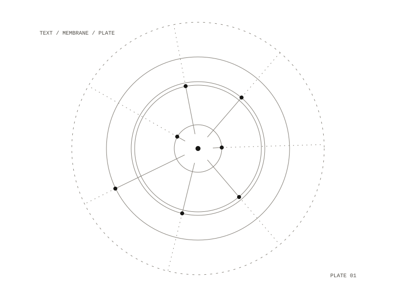

Diagram Studio
Diagram Studio turns texts (stories, rituals, myths, poems, philosophical passages and source fragments) into original SVG diagrams that aim to be structurally rigorous, visually distinctive and reusable across a family of plates. Its primary source was The Greek Magical Papyri in Translation (1986), specifically the spells of PGM VII.

Workflow
Each plate goes from text to diagram in six steps:
- Close read: extract the actors, gates, thresholds, timing conditions, state changes and concealed elements.
- Name the dominant invariant: spine, loop, braid, membrane, field, scaffold, score or lattice.
- Critique the naive diagram: is it a disguised flowchart, and does it flatten the source?
- Declare the diagram type before drawing.
- Render the SVG, with text as density, substrate, echo and marginalia as well as labels.
- Offer two or three concrete next iterations.
The twelve diagram types are the braided score, field topology, state-change plate, ritual loop, membrane diagram, threshold map, sedimentation diagram, orbital schema, liturgical or musical score, marginal gloss plate, conduit map and weave or string diagram.
PGM VII.1–148
The completed plate is the Oracle of Sarapis, PGM VII.1–148, drawn as a membrane diagram. Its invariant is a membrane crossed in both directions, between a material register (the operator, the boy and the apparatus) and a divine register (Sarapis). The vowel sequence A O IAO E O E Y is drawn as the crossing mechanism itself. Three things were withheld from the plate: the oracle content, which is absent in the source, the palindrome names, and variant timing.
Three further plates were proposed: a braided score with one staff for the operator and one for the boy, the vowel sequence as a shared chord cluster; a threshold map of the throne vision gate; and a plate of the VII.222–249 binding spell comparing its crossing mechanics with the oracle's.
Visual language
The plates combine the score, the map, the ritual plate, technical engraving, the systems diagram and the glossed manuscript. They avoid clip-art symbolism, generic wireframes, decorative mysticism and over-explaining inside the plate.
The workflow and the diagram-type vocabulary continue in Diagrammatic Immanence, which adds a formal intermediate representation between the text and the picture, and a musical output.
the Greek Magical Papyri, PGM VII
PGM VII.1–148, membrane diagram
12